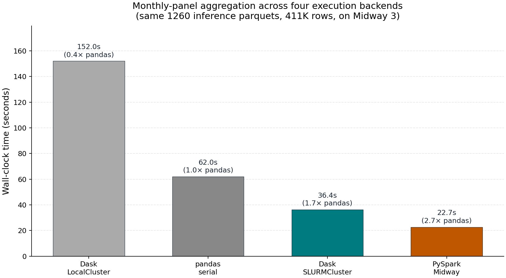
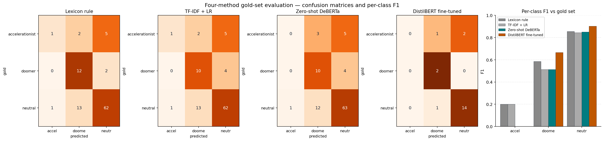

Framework benchmark
Wall-clock comparison across pandas, Dask, and Spark aggregation backends using the same normalized parquet inputs.
Interactive Research Site
A public landing page for the project Mapping the Discursive Battle Over AI on Hacker News. The original AWS S3 static site is no longer available, so this GitHub Pages version restores access to the dashboards, figures, and final deliverables from the public repository snapshot.
Track doomer, accelerationist, and neutral shares over 60 months with event markers for ChatGPT, GPT-4, and the OpenAI board crisis.
MeasurementCompare monthly framing shares across multiple classifiers to see where the measurement instruments agree, diverge, or flip sign.
AtlasExplore the corpus-level topic structure as a UMAP plus DataShader map colored by BERTopic cluster.
TopicsView the major BERTopic clusters as a stacked-area chart to understand how topic composition shifts through the AI cycle.

Wall-clock comparison across pandas, Dask, and Spark aggregation backends using the same normalized parquet inputs.

A compact view of how the evaluated classifiers line up against the human-labeled validation set.
If you need the original AWS endpoint back exactly, the old URL currently
fails because the bucket hn-ai-discourse-public-2026 no longer
exists. The fastest recovery path is this GitHub Pages deployment; the
AWS path would require recreating a bucket and re-uploading the static files.